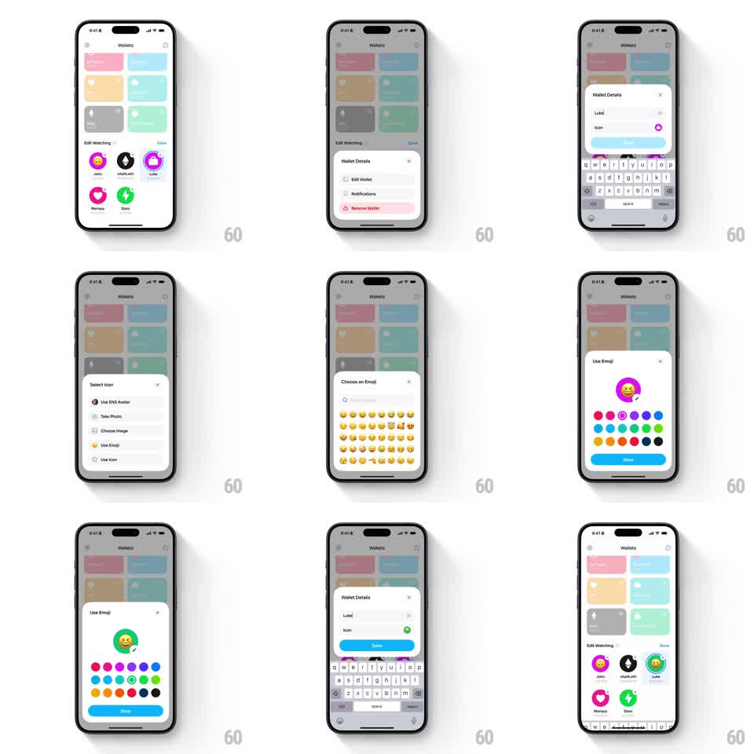

Media
Frame-by-frame

Rebuild this interaction 1:1: Family's wallet-editing sheet flow - from the light "Wallets" grid of pastel cards, a wallet's "Wallet Details" sheet expands through editing states (name field with keyboard, Select Icon menu, Choose an Emoji grid, Use Emoji color picker with Save) and contracts back to the grid showing the updated wallet.

Rebuild this interaction 1:1: Family's wallet-editing sheet flow - from the light "Wallets" grid of pastel cards, a wallet's "Wallet Details" sheet expands through editing states (name field with keyboard, Select Icon menu, Choose an Emoji grid, Use Emoji color picker with Save) and contracts back to the grid showing the updated wallet.
## Integration
Integration: stack-agnostic spec - springs given as stiffness/damping, timed motions as duration + curve; map every value to your framework and animation library of choice.
## Scene
Light "Wallets" screen: 2x3 grid of pastel wallet cards (pink, blue, cream, mint, gray, green) plus an "Edit Watching" row of circular watched wallets (John, vitalk.eth, Marissa, BFFs) and Done. Sheet 1 "Wallet Details": Edit Wallet, Notifications, Remove Wallet (red). Edit state: name field ("Luke"), Icon row, Save (blue), keyboard up. "Select Icon": Use ENS Avatar, Take Photo, Choose Image, Use Emoji, Use Icon. "Choose an Emoji": search field, emoji grid. "Use Emoji": big emoji preview on a color dot, color dot rows (magenta, purple, blue, teal, green, orange, red, black), Save.
## Motion spec
Pattern: single sheet container expanding and contracting per step.
- Tap a wallet: the sheet rises (spring ~300/20) to its menu height, content staggering in (50ms rows).
- Tap Edit Wallet: the sheet grows (height spring ~280/22, 300ms) as the keyboard slides up in lockstep (250ms), the name field focused with cursor blink; Save enables once text changes.
- Tap the Icon row: the sheet contracts to the Select Icon menu (height easing 250ms), then expands into the Choose an Emoji grid (height spring 300ms) with the emoji rows cascading in (30ms per row).
- Pick an emoji: the sheet contracts to the Use Emoji preview (spring ~320/20), the chosen emoji scaling into the preview circle (0.6 -> 1, spring ~340/16); tapping a color dot recolors the preview instantly with a 150ms crossfade.
- Save: the sheet collapses back to Wallet Details (250ms), then Done returns to the grid where the wallet's icon crossfades to the new emoji (200ms).
## Calibration
- The sheet's corner radius and width stay constant; only height and content animate.
- Keyboard and sheet bottom never separate.
## Reduced motion
Steps crossfade (200ms) at each step's final height without spring.
## Don't miss
- Remove Wallet stays visible in red at the bottom of the details sheet.
- The watched-wallet circles in Edit Watching update with the new emoji after Save.